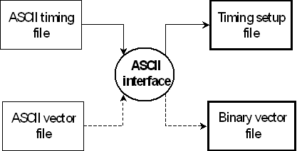

Basic Translation Concept
The ASCII interface translates high level information about the timing and vector setup of a device test into SmarTest timing and vector setup files. The timing is equation based. Timing and vector information are passed to the ASCII interface in two separate input files: the ASCII timing file and the ASCII vector file.
The following figure shows the operation mode of the ASCII interface in broad outline:
